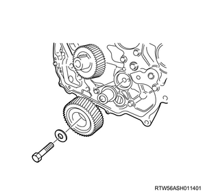
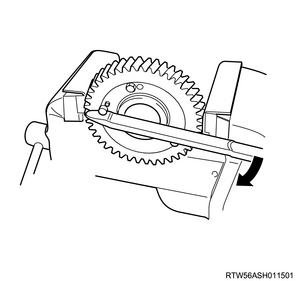
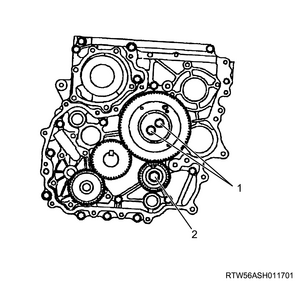
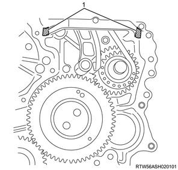
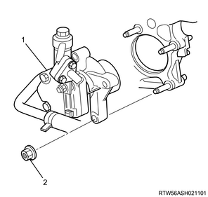
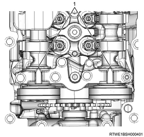
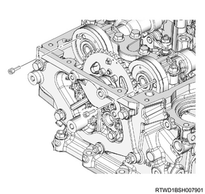
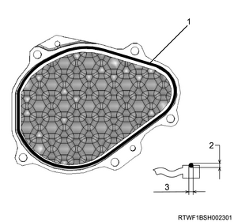

Timing gear train installation (4JK1)
1. Crank gear installation
1. Install the crank gear to the crankshaft.
2. Idle gear C installation
1. Apply the engine oil to the idle gear C shaft.
Note
- Apply it to the gear assembly sections.
2. Install the idle gear C shaft to the timing gear case.
3. Install the idle gear C to the idle gear C shaft.
4. Apply the engine oil to the bolt.
Note
- Apply it to the thread and the seat.
5. Temporarily tighten the bolt to the timing gear case.

3. Idle gear A installation
1. Fasten the sub gear to the idle gear A.
Note
- When fixing of the sub gear is released.
- Tighten the sub gear mounting bolt.
- Turn the sub gear to the right until the M6 bolt holes between the idle gear A and sub gear are aligned, by using a sub gear and a lever.
- Install the M6 bolt with the appropriate torque so that the sub gear does not move.

Note
- Align the oil holes of the cylinder block and the idle gear A shaft.
2. Apply the engine oil to the idle gear A shaft.
3. Install the idle gear A shaft to the timing gear case.
4. Install the idle gear A to the idle gear A shaft.
Note
- Install the idle gear A with the alignment mark aligned.

Caution
- Do not align the alignment marks shown in the following diagram.

5. Install the idle gear A flange to the idle gear A.
6. Apply the engine oil to the bolt.
Note
- Apply it to the threaded portion and the seat surface.
7. Temporarily tighten the bolt to the timing gear case.

8. Securely tighten the bolt to the timing gear case.
Tightening torque： 32 N・m { 3.3 kgf・m / 24 lb・ft } Idle gear A
Tightening torque： 59 N・m { 6.0 kgf・m / 44 lb・ft } Idle gear C

- Idle gear A bolt
- Idle gear C bolt
9. Remove the bolt from the idle gear A.
Note
- Remove the M6 bolt.

- M6 bolt
4. Gear case cover installation
1. Apply liquid gasket to the timing gear case.
Note
- Apply ThreeBond 1207B to the area indicated in the diagram.
Caution
- Within 5 minutes of applying the liquid gasket, install the cover.

- Liquid gasket application area
2. Install the gasket to the gear case cover.
Caution
- Do not reuse the gasket.
3. Install the gear case cover to the timing gear case.
Tightening torque： 8 N・m { 0.8 kgf・m / 71 lb・in }

5. Cover installation
1. Install the cover to the gear case cover.
Tightening torque： 10 N・m { 1.0 kgf・m / 89 lb・in }

6. Vacuum pump assembly installation
1. Install the vacuum pump assembly to the gear case cover.
Tightening torque： 25 N・m { 2.5 kgf・m / 18 lb・ft }
2. Install the vacuum pump oil pipe to the vacuum pump assembly and the cylinder block.

Tightening torque： 12 N・m { 1.2 kgf・m / 106 lb・in }
3. Install the vacuum hose to the vacuum pipe and the vacuum pump assembly.
Tightening torque： 25 N・m { 2.5 kgf・m / 18 lb・ft }

7. Power steering oil pump assembly installation
1. Install the power steering oil pump to the timing gear case.
Tightening torque： 25 N・m { 2.5 kgf・m / 18 lb・ft }

- Power steering oil pump
- Nut
2. Install the power steering oil hose to the bracket.

- Bracket
8. Crankshaft pulley installation
1. Install the crankshaft pulley to the crankshaft.
Note
- Align the crankshaft pulley to the key of the crankshaft and install it.
- Hold the fly wheel ring gear in a stopped state, and lock the crankshaft when tightening the crankshaft pulley bolt.
Caution
- Take care not to damage the crankshaft damper pulley boss portion.
- Make sure to use a new crank pulley bolt and washer.
Tightening torque： 294 N・m { 30.0 kgf・m / 217 lb・ft }

9. Idle gear D installation
1. Apply the engine oil to the idle gear shaft.
Note
- Apply to the gear sliding section of the idle gear shaft.
2. Apply the engine oil to the bolt.
Note
- Apply to the threaded portions and the seating surfaces of the mounting bolts.
3. Install the idle gear shaft to the camshaft bracket.
4. Install the idle gear D to the idle gear shaft.
Note
- Install idle gear D and the sleeve.
Tightening torque： 59 N・m { 6.0 kgf・m / 44 lb・ft }
10. Camshaft installation
1. Apply the engine oil to the camshaft journal.
2. Install the exhaust camshaft to the camshaft bracket.
3. Install the inlet camshaft to the camshaft bracket.
Note
- Align the timing marks with idle gear D and install.
Caution
- Loosen the rocker arm adjust nut in advance and loosen the adjust screw by 2 pitch or more.
- Face the marking on the camshaft upward and install to the camshaft brackets.
- Exhaust camshaft gear
- Inlet camshaft gear
- Idle gear D
4. Apply the engine oil to the camshaft bearing cap.
Note
- Apply to the bearing cap sliding surface.
5. Apply the engine oil to the camshaft journal.
6. Install the camshaft bearing cap to the cylinder head.
Caution
- Check the marking on the top surface and install.
7. Align the camshaft to the alignment mark.
Note
- Align the marks on the inlet camshaft and exhaust camshaft with the mark on the bearing cap.
Caution
- Confirm that the valve cap is correctly installed to the valve stem end.
- Be careful of valve cap detachment or looseness.

- Alignment mark
8. Apply the engine oil to the bolt.
Note
- Apply to the threaded portion and seating surface of the bolt.
9. Temporarily tighten the camshaft bearing cap to the camshaft bracket.
10. Securely tighten the camshaft bearing cap to the camshaft bracket.
Note
- Tighten the M8 bolts in the order shown in the diagram.
Tightening torque： 18 N・m { 1.8 kgf・m / 13 lb・ft } Wet
Note
- Tighten the M6 bolts in the order shown in the diagram.
Tightening torque： 7 N・m { 0.7 kgf・m / 62 lb・in } Dry
Tightening torque： 6 N・m { 0.6 kgf・m / 53 lb・in } Wet
11. Remove the lock bolt from the camshaft gear.

11. Timing chain guide installation
1. Install the timing chain guide to the cylinder head and the cylinder block.
Tightening torque： 25 N・m { 2.5 kgf・m / 18 lb・ft }

12. Timing chain tension lever installation
1. Install the timing chain tension lever to the cylinder head.
Note
- Place the timing chain tension lever in between the timing gear case and the cylinder block.
13. Timing chain installation
1. Install the sprocket to the idle gear D.
Note
- Install as a set with the timing chain.
Tightening torque： 8 N・m { 0.8 kgf・m / 71 lb・in }
2. Install the sleeve to the sprocket.
Tightening torque： 59 N・m { 6.0 kgf・m / 44 lb・ft }
Note
- Align the 2 timing marks as shown in the diagram.

- Timing chain
- Timing mark
- Blue link
- Yellow link
14. Timing chain lever pivot installation
1. Install the timing chain lever pivot to the timing chain tension lever.
Tightening torque： 27 N・m { 2.8 kgf・m / 20 lb・ft }

15. Timing chain tensioner installation
1. Connect the hook to the pin.
Note
- Keep the state where the latch is being pushed.
- Insert the plunger.
- Install the hook to the pin, and fasten the plunger.

- Pin
- Plunger
- Latch
- Timing chain tensioner
- Hook
2. Install the timing chain tensioner to the cylinder head.
Caution
- Do not reuse the gasket.
Tightening torque： 10 N・m { 1.0 kgf・m / 89 lb・in }
3. Install the oil pipe to the timing chain tensioner.
Tightening torque： 14.7 N・m { 1.5 kgf・m / 11 lb・ft }

- Oil pipe
- Timing chain tensioner
- Gasket
4. Disconnect the hook from the pin.
Note
- Lightly push the area indicated with an arrow in the diagram.
- The hook of the tensioner opens and the plunger pushes the tension lever to pull the chain.

16. Timing chain upper cover installation
1. Apply liquid gasket to the timing chain upper cover.
Note
- Apply ThreeBond 1217H or equivalent.
Bead height： 1.0 to 1.5 mm { 0.039 to 0.059 in }
Bead width： 2.0 to 2.5 mm { 0.079 to 0.098 in }
Caution
- Within 5 minutes of applying the liquid gasket, install the cover.

- Liquid gasket
- Bead height
- Bead width
Caution
- Wipe off any excess liquid gasket.
2. Install the timing chain upper cover to the cylinder head.
Tightening torque： 25 N・m { 2.5 kgf・m / 18 lb・ft }
17. CMP sensor connect
1. Connect the connector to the CMP sensor.

- CMP sensor
18. Cylinder head cover installation
1. Apply liquid gasket to the cylinder head.
Note
- Apply ThreeBond 1217H or 1207C to the mating surface with the cylinder head.
Caution
- Within 5 minutes of applying the liquid gasket, install the cover.
Bead width： 2.0 to 2.5 mm { 0.079 to 0.098 in }
Bead height： 1.0 to 1.5 mm { 0.039 to 0.059 in }

- Liquid gasket
- Bead width
- Bead height
2. Apply liquid gasket to the cylinder head.
Caution
- Do not reuse the cylinder head cover gasket.
Note
- Temporarily tighten in the order shown in the diagram.
Tightening torque： 5 N・m { 0.5 kgf・m / 44 lb・in }

Note
- Final tighten in the order shown in the diagram.
Tightening torque： 9 N・m { 0.9 kgf・m / 80 lb・in }
3. Connect the harness clip to the cylinder head cover.

19. Blow-by hose connect
1. Connect the blow-by hose to the cylinder head cover.
20. Fuel leak-off hose installation
1. Install the leak-off pipe to the injector.

- Leak-off pipe
- Clip
2. Install the fuel leak-off hose to the leak-off pipe.

- Fuel leak-off hose
- Connector
Caution
- Do not reuse the leak-off pipe and the clip.
21. Injector connect
Note
- When replacing the injectors, record the injector ID code data from each of the injector harness connector housings.
1. Disconnect the harness connector from the injector.
Note
- Record all of the harness connector housing numbers.
- The diagram below shows the correct order for the injector ID codes.
- 72 04 F9 F8 F0 00 F0 E7 09 F6 F9 96
- Injector ID code
- Injector
2. Connect the harness connector to the injector.
22. Vacuum pipe installation
1. Install the vacuum pipe to the cylinder head cover.
Note
- Install it as a set with the harness bracket. (for LHD models)
Tightening torque： 25 N・m { 2.5 kgf・m / 18 lb・ft }
23. Bracket installation
1. Install the bracket to the cylinder head cover.
Note
- Install as a set with the turbocharger control solenoid.
Tightening torque： 25 N・m { 2.5 kgf・m / 18 lb・ft }
2. Connect the connector to the turbocharger control solenoid.
3. Connect the vacuum hose to the turbocharger control solenoid.

24. Timing chain lower cover installation
1. Apply liquid gasket to the timing chain lower cover.
Note
- Apply ThreeBond 1207C or equivalent.
Bead height： 2.0 to 2.5 mm { 0.079 to 0.098 in }
Bead width： 2.0 to 2.5 mm { 0.079 to 0.098 in }
Caution
- Within 5 minutes of applying the liquid gasket, install the cover.

- Liquid gasket
- Bead height
- Bead width
2. Install the timing chain lower cover to the gear case cover.
Tightening torque： 10 N・m { 1.0 kgf・m / 89 lb・in }
25. Noise cover installation
1. Install the noise cover to the timing chain lower cover.
Tightening torque： 10 N・m { 1.0 kgf・m / 89 lb・in }

26. Fan shroud installation
1. Install the fan guide to the radiator.
Note
- Install the lower fan guide together with the fan shroud.
27. Fan pulley installation
1. Install the fan pulley to the water pump assembly.
28. Cooling fan clutch installation
1. Install the cooling fan clutch to the water pump assembly.
Note
- Install the part together with the cooling fan.

Tightening torque： 8 N・m { 0.8 kgf・m / 71 lb・in }
29. Fan guide installation
1. Install the fan guide to the radiator.
Note
- Install the upper fan guide.

- Upper fan guide
- Clip
- Lower fan guide
- Fan shroud
30. Cooling fan belt installation
1. Install the cooling fan belt to the pulley.
31. Cooling fan belt adjustment
1. Adjust tension to the specified value using a tension meter.
Note
- Turn the adjust bolt to adjust the tension.
2. Check tension of the cooling fan belt.
Note
- When adjusting the amount of flex to the original value
- Apply a load to measurement point 1 of the cooling fan belt and adjust the amount of flex.
Load： 98 N { 10 kg / 22 lb }
| Position of belt tension | |
| Amount of flex | |
| New product | ： 5.0 to 6.0 mm { 0.197 to 0.236 in } |
| Reuse | ： 7.0 to 7.8 mm { 0.276 to 0.307 in } |
Note
- When adjusting the tension by using a sonic tension meter
- Measure the frequency at measurement point 1 with a sonic tension meter.
| Position of the belt tension | |
| Frequency | |
| New | ： 207 to 231 Hz |
| Reuse | ： 176 to 190 Hz |

- Measurement point 1
- Measurement point 2
- Measurement point 3
- Measurement point 4
- Adjust bolt, A/C compressor
Note
- After adjusting the tension, tighten the tensioner fixing nut.
Tightening torque： 41 N・m { 4.2 kgf・m / 30 lb・ft }
Note
- If the cooling fan belt is replaced with a new one, make the new cooling fan belt fit in to cope with initial elongation.
- After making the cooling fan belt fit in, adjust its tension once again.
32. A/C compressor drive belt installation
1. Install the A/C compressor drive belt to the pulley.

- A/C compressor drive belt
33. A/C compressor drive belt adjustment
1. Adjust tension to the specified value using a tension meter.
Note
- When adjusting the amount of flex to the original value
- Apply a load to measurement points 2, 3, and 4 of the A/C compressor drive belt and adjust the amount of flex.
Load： 98 N { 10 kg / 22 lb }
| Measurement point 2 | |
| Amount of flex | |
| For a new product | ： 12.4 to 16.4 mm { 0.488 to 0.646 in } |
| When reused | ： 16.5 to 19.1 mm { 0.650 to 0.752 in } |
| Measurement point 3 | |
| Amount of flex | |
| For a new product | ： 12.5 to 16.5 mm { 0.492 to 0.650 in } |
| When reused | ： 16.5 to 19.1 mm { 0.650 to 0.752 in } |
| Measurement point 4 | |
| Amount of flex | |
| For a new product | ： 15.9 to 20.7 mm { 0.626 to 0.815 in } |
| When reused | ： 20.7 to 23.7 mm { 0.815 to 0.933 in } |
Note
- When adjusting the tension by using a sonic tension meter
- Measure the frequency at measurement points 2, 3, and 4 with a sonic tension meter.
| Measurement point 2 | |
| Frequency | |
| For a new product | ： 92 to 112 Hz |
| When reused | ： 80 to 92 Hz |
| Measurement point 3 | |
| Frequency | |
| For a new product | ： 92 to 112 Hz |
| When reused | ： 79 to 91 Hz |
| Measurement point 4 | |
| Frequency | |
| For a new product | ： 70 to 86 Hz |
| When reused | ： 62 to 70 Hz |
- Measurement point 1
- Measurement point 2
- Measurement point 3
- Measurement point 4
- Adjust bolt (A/C compressor drive belt)
Note
- After adjusting the tension, tighten the tensioner fixing nut.
Tightening torque： 41 N・m { 4.2 kgf・m / 30 lb・ft }
34. Radiator upper hose installation
1. Install the radiator upper hose to the water outlet pipe and the radiator.
Tightening torque： 5 N・m { 0.5 kgf・m / 44 lb・in } Hose clip

- Radiator upper hose
35. Intake air duct installation
1. Install the intake air duct to the intake throttle valve and the intercooler.
Note
- Align the marks on the pipe side and hose side.
Tightening torque： 10 N・m { 1.0 kgf・m / 89 lb・in } Bolt
Tightening torque： 4 N・m { 0.4 kgf・m / 35 lb・in } Clamp (Intake throttle side)
Tightening torque： 5 N・m { 0.5 kgf・m / 44 lb・in } Clamp (Intercooler side)

36. Boost pressure sensor connect
1. Connect the connector to the boost pressure sensor.

37. Intake air duct installation
1. Install the intake air duct to the turbocharger and the intercooler.
Caution
- Referring to the diagram, face the threaded portion of the clamp toward the engine front.
Tightening torque： 25 N・m { 2.5 kgf・m / 18 lb・ft } Nut, bolt
Tightening torque： 4 N・m { 0.4 kgf・m / 35 lb・in } Clamp (Turbocharger side)
Tightening torque： 5 N・m { 0.5 kgf・m / 44 lb・in } Clamp (Intercooler side)

38. Engine cover installation
1. Install the engine cover to the engine.

- Engine cover
39. Underguard installation
Note
- The following applies to models with an under air deflector.
1. Install the under air deflector to the frame.
Note
- Tighten the clip and the 5 bolts.
Tightening torque： 42 N・m { 4.3 kgf・m / 31 lb・ft }

- Bolt
- Clip
Note
- The following applies to models with front and rear underguard.
2. Install the rear underguard to the frame.
Note
- Tighten the 4 bolts.
Tightening torque： 42 N・m { 4.3 kgf・m / 31 lb・ft }
3. Install the front underguard to the frame.
Note
- Tighten the 5 bolts.
Tightening torque： 42 N・m { 4.3 kgf・m / 31 lb・ft }

- Front underguard
- Rear underguard
- Bolt
Note
- The following applies to models with front and rear underguard and an oil pan guard.
4. Install the rear underguard to the frame.
Note
- Tighten the 4 bolts.
Tightening torque： 42 N・m { 4.3 kgf・m / 31 lb・ft }
5. Install the oil pan guard to the frame.
Note
- Tighten the 4 bolts.
Tightening torque： 90 N・m { 9.2 kgf・m / 66.4 lb・ft }
6. Install the front underguard to the frame.
Note
- Tighten the 5 bolts.
Tightening torque： 42 N・m { 4.3 kgf・m / 31 lb・ft }

- Front underguard
- Oil pan guard
- Bolt oil pan guard
- Bolt
- Rear underguard
40. Coolant filling
1. Replenish the radiator with coolant.
Note
- Use the coolant contains 50 % anti-freeze solution.
- Pour coolant up to the filler neck.
2. Replenish the radiator reserve tank with coolant.
Note
- Pour coolant up to the MAX line.
3. Install the radiator cap to the radiator.
41. Battery ground cable connect
1. Connect the battery ground cable to the battery.
2. Close the engine hood assembly.
3. Lower vehicle.